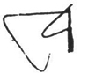

Tenger Financial Group
BOLD Magvan
Chief Executive Officer
Welcome to TenGer Financial Group,
TenGer Financial Group (TenGer) has been a pioneer in the financial arena as one of the most successful micro finance institutions in the world. XacBank, our flagship subsidiary, has developed into a universal bank with systemic influence in Mongolia. Since1998, TenGer grew from a small local project to a major financial group that provides financial services to the people of Mongolia and across the border. TenGer has evolved beyond banking into a diverse portfolio of dynamic and growing companies in leasing, insurance, brokerage, investment banking, IT and security.
TenGer’s unique foundation has allowed us to have a diverse and strong base of international and local shareholders. To achieve our goals of being an institution with the highest standards of corporate governance and social responsibility, we have adopted the first ever Code of Conduct and Conflict of Interest Policy in Mongolia. Our continued development will depend on attracting and retaining skilled talents while staying true to our fundamental mission of People, Planet and Profit ultimately improving the lives of ordinary Mongolians.
In the past decade, Mongolia has witnessed a period of remarkable advancement and development as the country has increasingly drawn interest from the rest of the world due to its mineral endowment. We strive to be the financial gateway to those who wish to be involved in Mongolia’s unprecedented economic growth and its cultural heritage.
While the future is always uncertain, I believe we are well prepared to seize the opportunities and challenges that await us in our journey.
With warmest regards,
BOLD Magvan
Chief Executive Officer